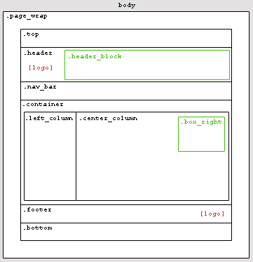

culture shock
Voodoo Dolly in an Awkward Office Environment Coffee ClutchLeft Column
Secondary links, news updates, pointless rants or images can fill this column.
The border to the right is assigned to the center column and will expand with content over there. You can move it to this colum or give it the axe. Decisions, decisions.
Style Sheets
Seperate style sheets for both print and handheld devices are included with this design, so you'd be covered if/when someone visits your site on their cell phone or what-not.
Faux Column
This isn't a column but a handy little text box with a float:right slapped on it.
Could be used for a profile, secondary links or what ever else rocks your world.
Damn You IE!
Is common sense dead? And if it is, was Microsoft the ones that killed it? It never fails, learning about CSS is also learning about just how much of a pain in the ass IE can be.
This is the first time that I used the !important tag and it couldn't have come at a better time.
Is it too much to ask that someday web designers won't have to rely on hacks so much? Damn I hope not.
Voodoo Dolly (v1.0)
What can i say? A two-column layout with fixed dimensions. Sure it's nothing that will take over the world or get women to talk to you, but it can serve as either a personal or commercial web site.
Of course, out-of-the-box, this design can be applied to a site that has something to do with computers but by removing both the upper and lower logos, it can be used for anything really.
The image below gives you an idea what the "bones" of this design looks like.

Web Geek Stuff
Voodoo Dolly (v1.0) was tested in Windows with Firefox1.0.7, IE6.0, Netscape7.2 and Opera7.54 with valid css and xhtml 1.0-strict.
As is, download time for 56k is 5.76 seconds; ISDN 128K at 1.90 seconds; T1 at .35 seconds.
All images weigh in at 19.5KB.
Better Living Through Open Source Design
This is an open source design originally developed for the OSWD community and is free to be used and adpated as such. If you need help figuring things out or have questions about customizing this design, you can contact me through OSWD or visiting www.raykdesign.net.
If you use this design, please drop me a line so that I can see it in action. Thanks and good luck!